WELCOME !!!
Situs Ini Menampilkan Wisata Kebun Teh Yang Paling Dekat Dari Kota Bandung.
Semoga Menjadi Referensi Perjalanan Wisatamu !!!
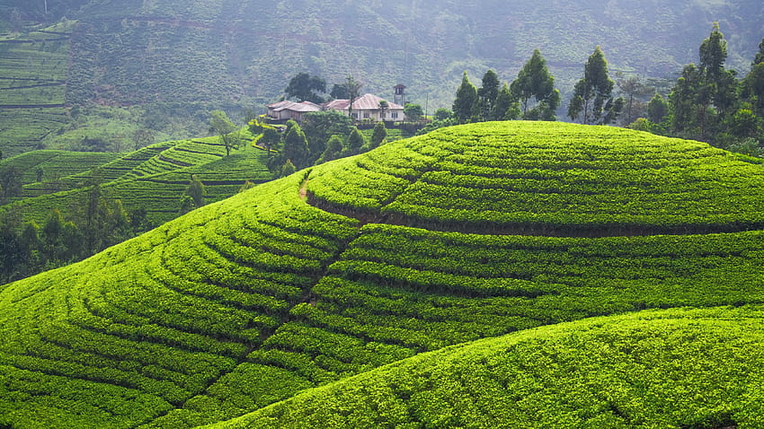
KEBUN TEH CIATER
Kebun Teh Ciater menjadi salah satu destinasi wisata alam di Subang yang bisa anda kunjungi bersama keluarga tercinta. Keindahan alam Subang yang mempesona, menyajikan destinasi wisata rekomended untuk piknik bersama keluarga. Kabupaten Subang memang menjadi salah satu kota di Jawa Barat yang menyimpan banyak potensi wisata. Mulai dari wisata alam, sejarah dan budaya di Subang Jawa Barat akan menemani dan memanjakan waktu libur anda. Dapatkan liburan yang menyenangkan dengan sajian spot wisata rekomended bersama orang tercinta.
Harga tiket masuk Kebun Teh Ciater sendiri yaitu Rp.5.000/orang, sangat murah bukan? Dengan biaya tersebut, anda bisa puas menikmati keindahan dan spot wisatanya sepuas hati. Untuk biaya tambahan yang harus anda keluarkan yaitu tiket parkir kendaraan Rp.2.000 untuk sepeda motor dan Rp.5.000 untuk mobil. (Harga tiket masuk wisata Kebun Teh Ciater dan retribusi tambahan bisa berubah sewaktu-waktu).
Jarak Kebun Teh Ciater dari pusat Kota Bandung sendiri kurang lebih 32 km. Anda bisa mengunjungi Kebun Teh Ciater dengan menempuh waktu sekitar 1 jam perjalanan menggunakan kendaraan.
Luas total lahan kebun teh ini sekitar 3.000 hektar yang dikelola oleh PTPN VIII. Terdapat sebuah pabrik pengolahan teh yang berada disekitar lokasi Kebun Teh Ciater ini. Karena perkebunan ini masih aktif dan beroperasi untuk mengolah dan memproduksi teh yang berkualitas. Perkebunan Ciater sendiri sudah ada sejak jaman penjajahan Belanda. Pabrik tersebut dibangun pada tahun 1990 yang dulunya sangat terkenal dan selalu menghasilkan banyak produk.
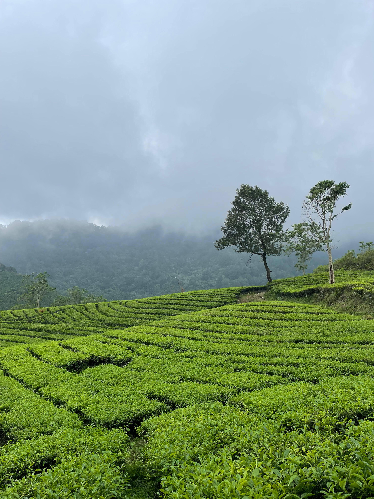
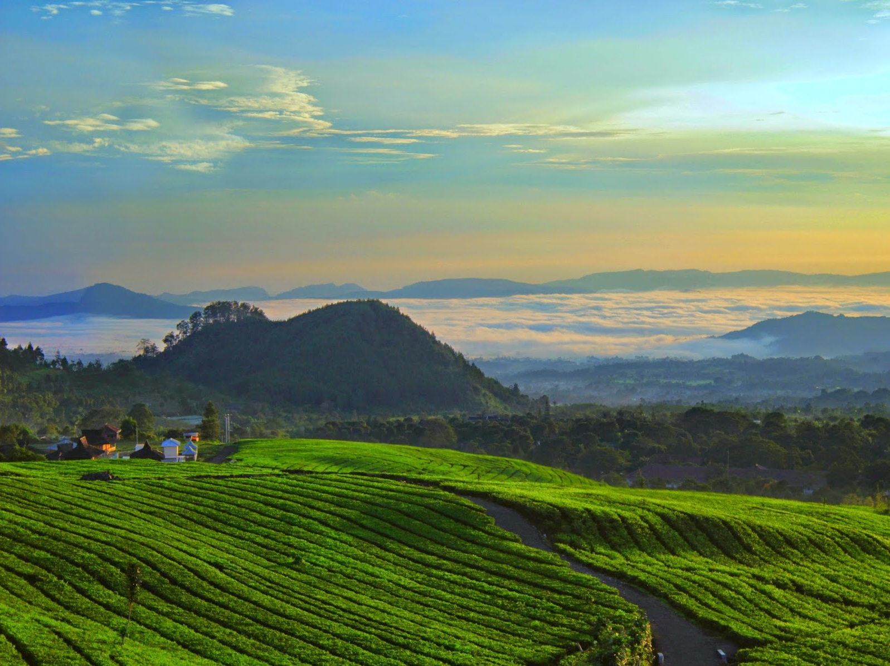
KEBUN TEH SUKAWANA
Saat ini kebun Sukawana memang dikelola oleh PTPN VIII. Namun, sebelum dikelola oleh perusahaan perkebunan milik negara tersebut sebenarnya kebun ini memiliki sejarah yang dikelola oleh pihak Belanda. Beberapa sumber menyebutkan bahwa pada awalnya, kebun teh ini dimiliki oleh seorang bangsawan Belanda. Awalnya, kebun ini diberi nama Van Houten yang merupakan panggilan untuk seorang Pangeran di Eropa. Namun, setelah Indonesia merdeka dari masa penjajahan Belanda, kebun ini diambil alih oleh pemerintah. Hingga pada akhirnya masuk dalam manajemen pengelolaan yang dilakukan oleh PTPN VIII. Pihak pengelola juga menjadikan kebun teh ini sebagai tujuan wisata yang terbuka untuk umum.
Untuk menjangkau kebun teh ini memang tidak terlalu sulit. Namun, disarankan bagi para pengunjung menggunakan transportasi pribadi seperti motor atau mobil. Hal ini untuk memudahkan penggunaan jalur yang digunakan. Lokasi kebun Sukawana berada di Parongpong, Lembang yang masih masuk dalam wilayah administrasi kabupaten Bandung Barat. Jarak tempuh dari pusat kota Bandung sekitar 15 KM. Tentu saja ini membuat kamu harus memperhitungkan waktu yang tepat untuk mengunjungi Objek wisata di Bandung Barat ini.
Setiap destinasi wisata, khususnya di Lembang memang memiliki harga tiket yang berbeda-beda. Untuk tiket masuk ke kebun teh Sukawana, pihak pengelola menerapkan harga sekitar 5 ribu per orang dan berlaku untuk setiap hari. Murah sekali bukan?
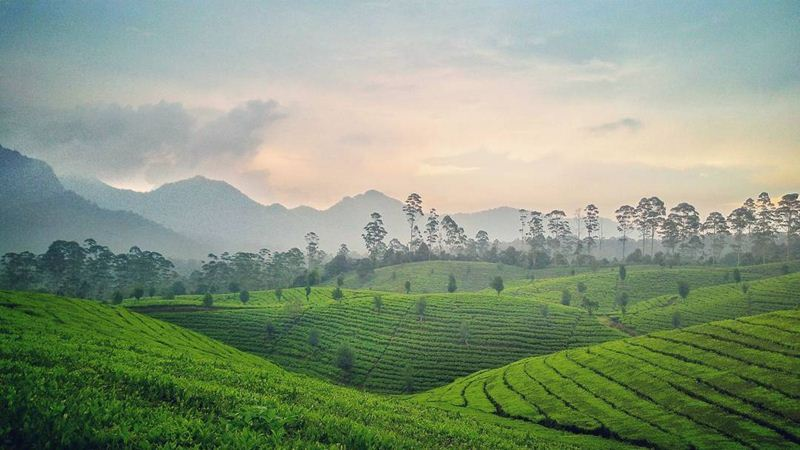
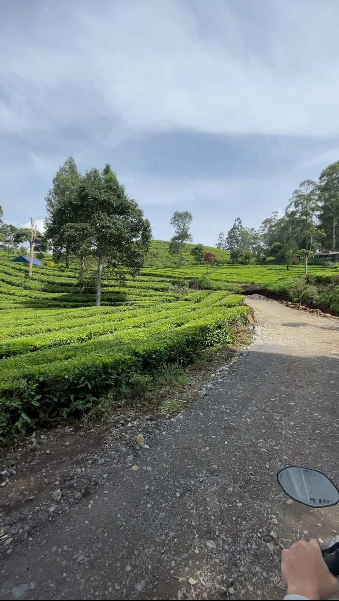
KEBUN TEH RANCABALI
Deretan perkebunan teh menghijau dengan cuaca yang sejuk sangat memanjakan mata. Berada di ketinggian 1628 mdpl, dengan suhu udara berkisar 16-20 derajat Celcius.Perkebunan teh ini menjadi salah satu obyek wisata dan spot foto yang menarik bagi siapapun yang melintasi Kawasan Ciwidey, Bandung Selatan.Namun, setelah Indonesia merdeka dari masa penjajahan Belanda, kebun ini diambil alih oleh pemerintah. Hingga pada akhirnya masuk dalam manajemen pengelolaan yang dilakukan oleh PTPN VIII. Pihak pengelola juga menjadikan kebun teh ini sebagai tujuan wisata yang terbuka untuk umum.
Perkebunan Teh Rancabali merupakan peninggalan kolonial Belanda yang dibangun pada 1870. Sejak 1955 telah dinasionalisasi dan dikelola oleh PTPN VIII. Perkebunan teh seluas 1500 hektare ini terkenal dengan kualitas tehnya yang tinggi terutama jenis teh hitam. Selain itu kebun teh ini memproduksi teh hijau dan teh oolong. Selain perkebunan teh,di sini terdapat perkebunan kina yang juga merupakan peninggalan Belanda.
Aroma segarnya dedaunan dengan pemandangan hijau seperti permadani yang terhampar di depan mata menjadi penawar lelah dari hiruk pikuk ibukota. Kawasan yang instagramable ini berada 50 kilometer di sebelah selatan Kota Bandung.Perkebunan ini tak begitu jauh dari tempat wisata lainnya seperti Kawah Putih dan Ranca Upas. Bahkan dari kejauhan tampak Situ Patenggang dengan airnya yang tenang tertutup kabut tipis.
Kegiatan seru selain mengabadikan momen yang indah, wisatawan juga bisa tea walk dan kunjungan ke Pabrik Teh Rancabali. Di sana wisatawan bisa melihat mulai dari proses penanaman hingga pemetikan dan pengolahan teh. Perkebunan teh ini terbuka untuk umum dan tidak dipungut biaya alias gratis.
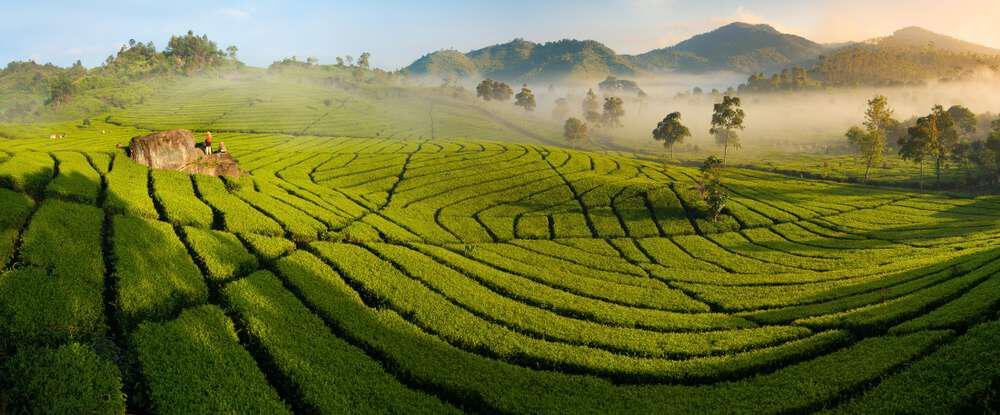
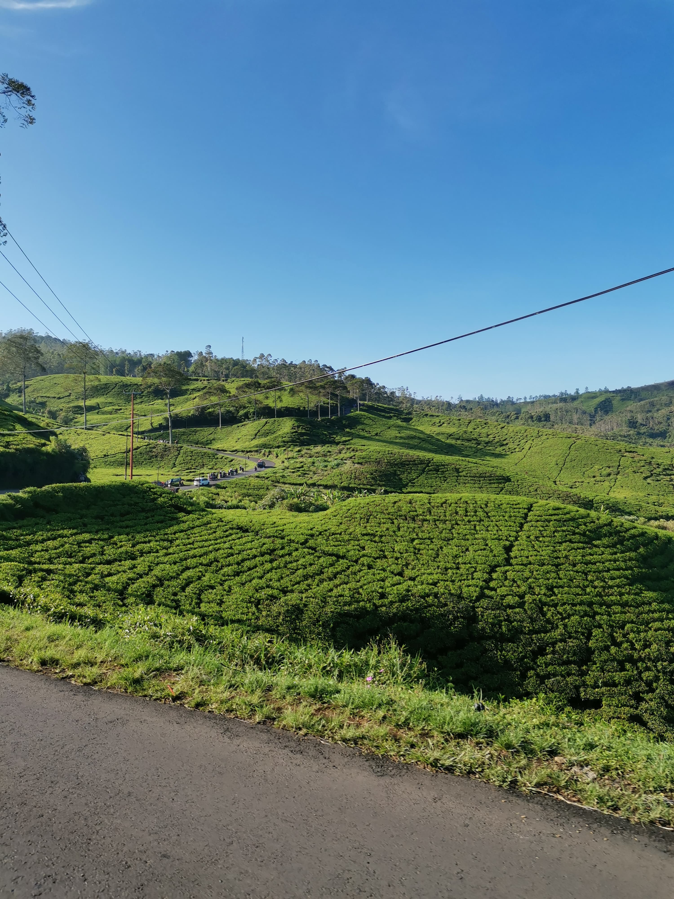
KEBUN TEH RANCABOLANG
Perkebunan Rancabolang Ciwidey adalah sebuah perkebunan teh yang berada dikawasan Ciwidey Bandung Jawa Barat. Perkebunan ini milik PTPN VIII yang berada di kawasan Geodipa Energi atau kawasan Kebun Teh Rancabolang milik PTPN VIII yang berada di Ciwidey. Selain sebagai perkebunan teh, Rancabolang juga menjadi sebuah objek wisata yang bisa dikunjungi para wisatawan yang tak hanya datang dari Bandung atau sekitarnya saja tetapi juga dari luar kota seperti Jakarta.
Selain terkenal akan keindahanya, Rancabolang juga terkenal dengan sebuah taman yang banyak terdapat pohon-pohon yang dibentuk seperti sebuah jamur. Itu sebabnya banyak yang menyebut taman ini sebagai Bukit jamur Rancabolang. Bila kita berfoto diantara pohon-pohon ini maka seperti berada diantara tanaman jamur yang berukuran raksasa dan kita seperti sebuah kurcaci kecil.
Untuk tiket masuknya adalah Rp 15.000, sudah dengan parkir dan objek wisata lainnya. Untuk toiletnya sendiri kalian bisa menumpang ke pos penjagaan sekitar kebun teh. Biasanya jika hari libur akan banyak wisatawan yang datang kesini sehingga kalo mau foto harus antri.
Disekitar Bukit Jamur Rancabolang Ciwidey ini ada juga spot foto yang cukup unik dan klasik lainya seperti rumah peninggalan Belanda yang memiliki ciri atau design unik seperti khas Belanda. Rumah-rumah ini dilengkapi dengan cerobong asap yang berguna sebagai penghangat ruangan. Yap kalian tau kan Ciwidey itu sangat dingin jadi butuh tempat perapian.
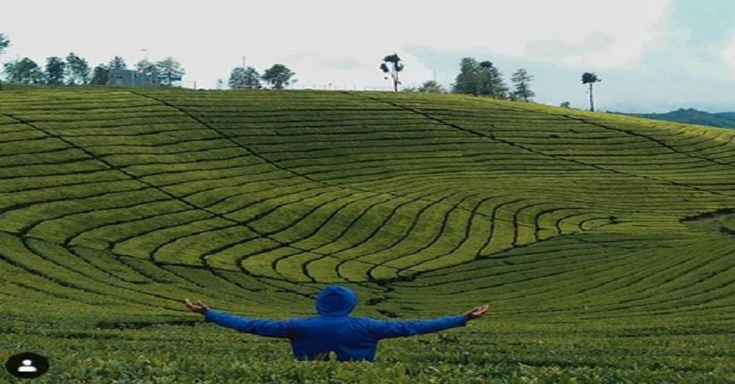
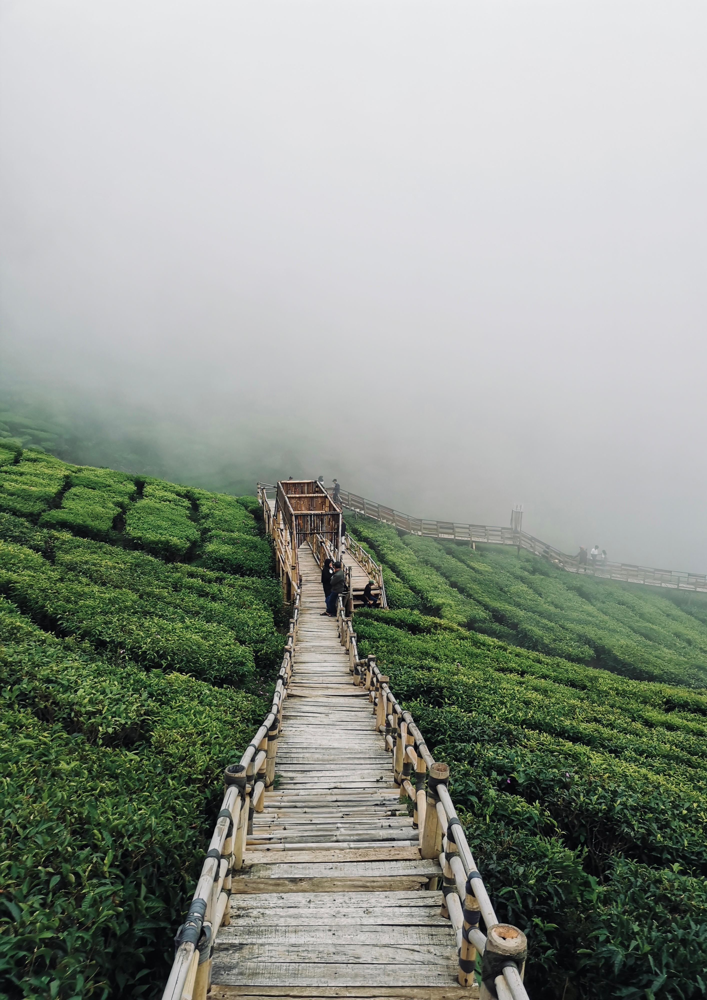
KEBUN TEH RIUNG GUNUNG
Kebun Teh Riung Gunung dengan hamparan hijau yang luas menjadi obat penyegar pikiran di tengah kesibukan harian. Berada di tengah-tengah perbukitan dan pepohonan menambah suasana asri saat menikmati waktu di sini. Selain pemandangannya yang memikat hati, di kebun teh pengunjung dapat menyeberang di atas jembatan sepanjang 400 meter. Tidak seperti biasanya pengunjung berjalan di antara tanaman teh, tetapi di sini pengunjung akan merasakan berjalan di atas kebun teh yang jaraknya 1 meter dari tanaman. Di sekitar perkebunan teh, pengelola juga menyediakan kendaraan ATV yang bisa digunakan untuk berkeliling sejauh 10 kilometer. Tidak perlu khawatir tersesat sebab akan ada pendamping yang siap untuk menemani perjalanan yang asyik.
Bagi pengunjung yang berminat untuk menghabiskan waktu di wisata alam ini perlu membeli tiket masuk yang bisa didapatkan secara langsung di lokasi. Untuk tarif yang dikenakan saat berwisata adalah Rp10.000
Wisata alam ini berada di Desa Pulosari, Kecamatan Pangalengan, Kabupaten Bandung.Patokannya adalah ketika menemukan perempatan situ cileunca dan gambung, maka belok kanan jika dari arah Kota Bandung menuju Gambung
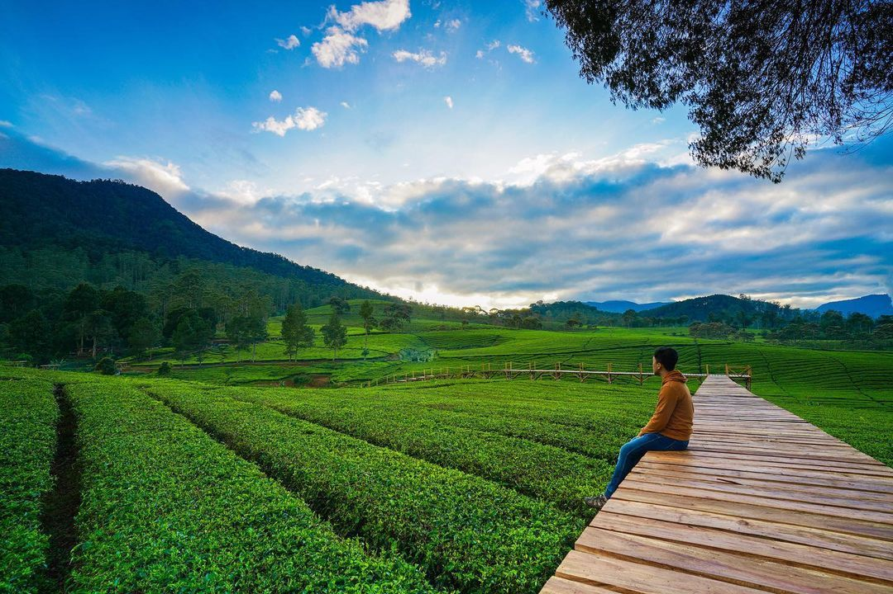
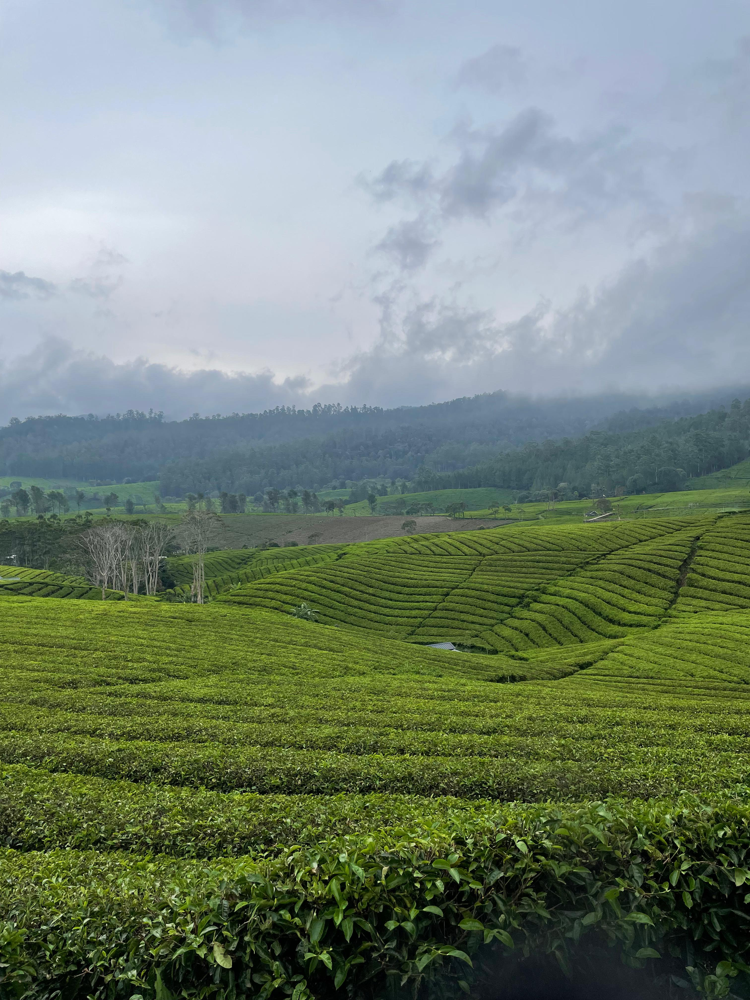
KEBUN TEH CUKUL
Perkebunan teh di Pangalengan berkembang dengan cepat dan luas, karena perkebunan memiliki peran dan kedudukan yang penting dalam menghasilkan devisa negara. Di samping itu, teh berperan sebagai komoditi ekspor Indonesia sebagai penghasil devisa negara karena peranannya cukup besar dalam menunjang perekonomian nasional. Salah satu perkebunannya adalah Perkebunan Teh Cukul yang ada di Pangalengan. Sejauh mata memandang panorama alam seakan terhampar luas.
Jika dilihat dari sejarah, perkebunan Teh Cukul ini merupakan Perkebunan PT Tatar Anyar Indonesia (Cukul Estate) merupakan satu dari sekian banyak perkebunan teh yang ada di Jawa Barat. Dalam perkembangannya, perkebunan teh ini memiliki sejarah panjang dalam persebaran perkebunan teh di Indonesia. Dimulai dari Belanda dan nantinya diikuti oleh pengusaha lain dari berbagai negara sesuai dengan pembabakan sejarah yang ada.
Kebun Teh Cukul adalah destinasi yang lagi ngehits di Jawa Barat. Perkebunan Teh Cukul yang masuk dalam areal PTPN VIII Malabar letaknya di Pangalengan, sekitar 3 jam dari Kota Bandung. Posisinya sedikit lebih tinggi dibanding Malabar, yakni sekitar 1.600 mdpl. Cocok untuk pemburu sunrise karena kita bisa melihat anggunnya matahari terbit.
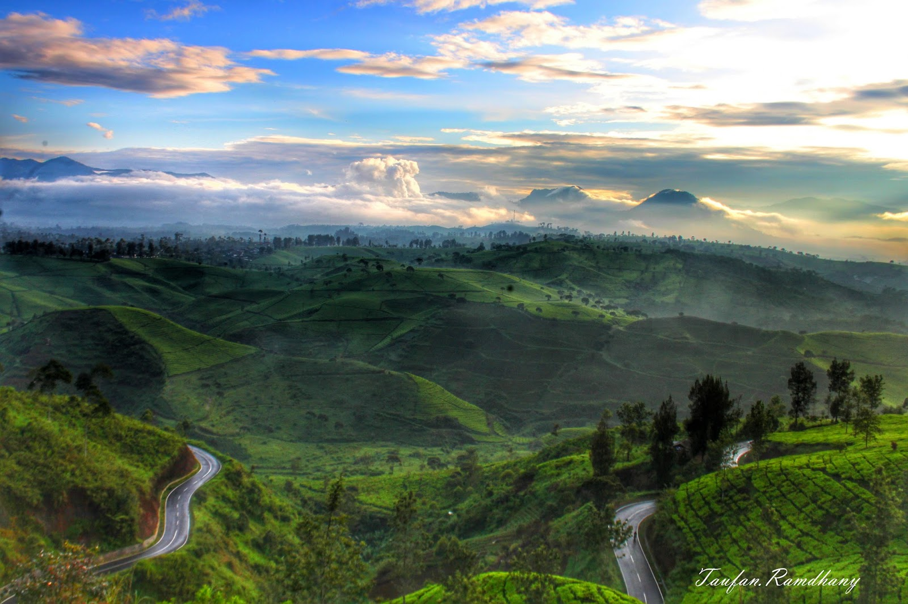
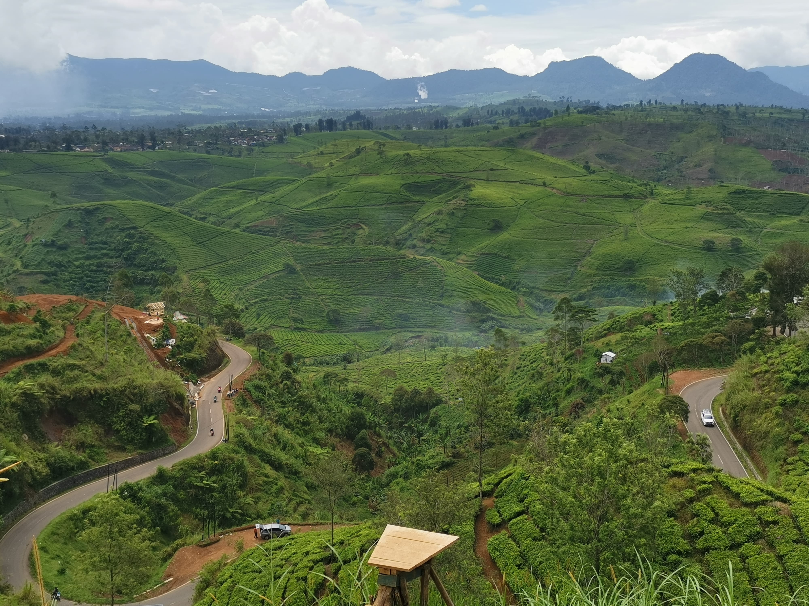
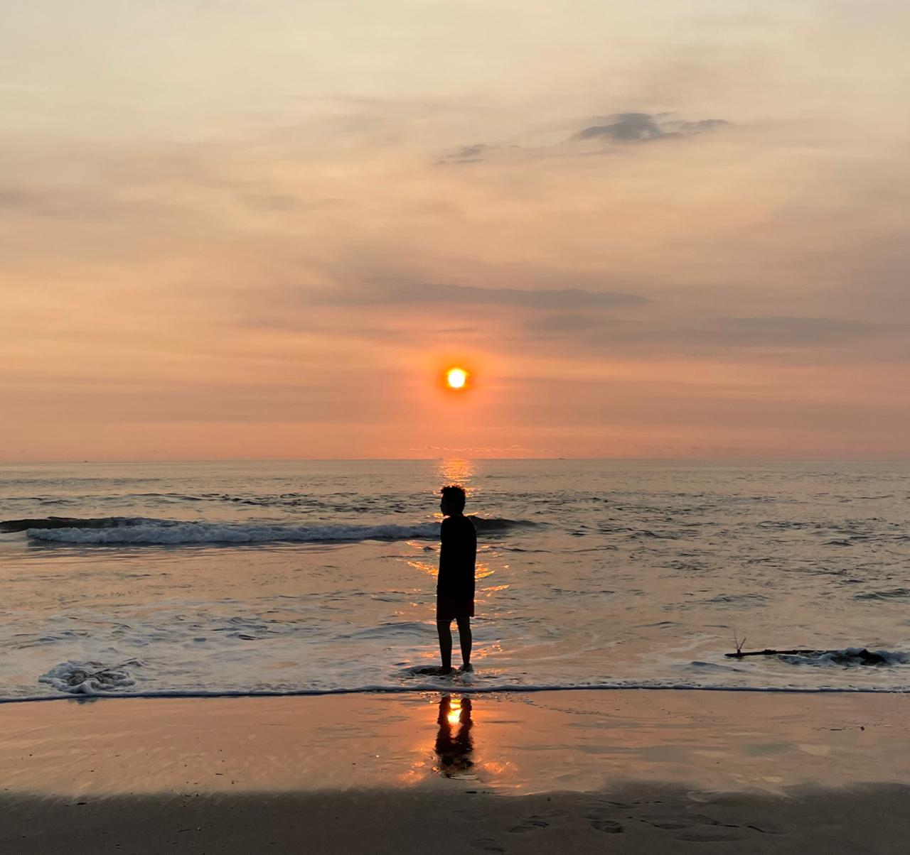
Nama : Anwar Dwicahya Sutrisno
NIM : 10123051
Kelas : IF-2
Nama : Anwar Dwicahya Sutrisno
NIM : 10123051
Kelas : IF-2
You Can Search Me On :